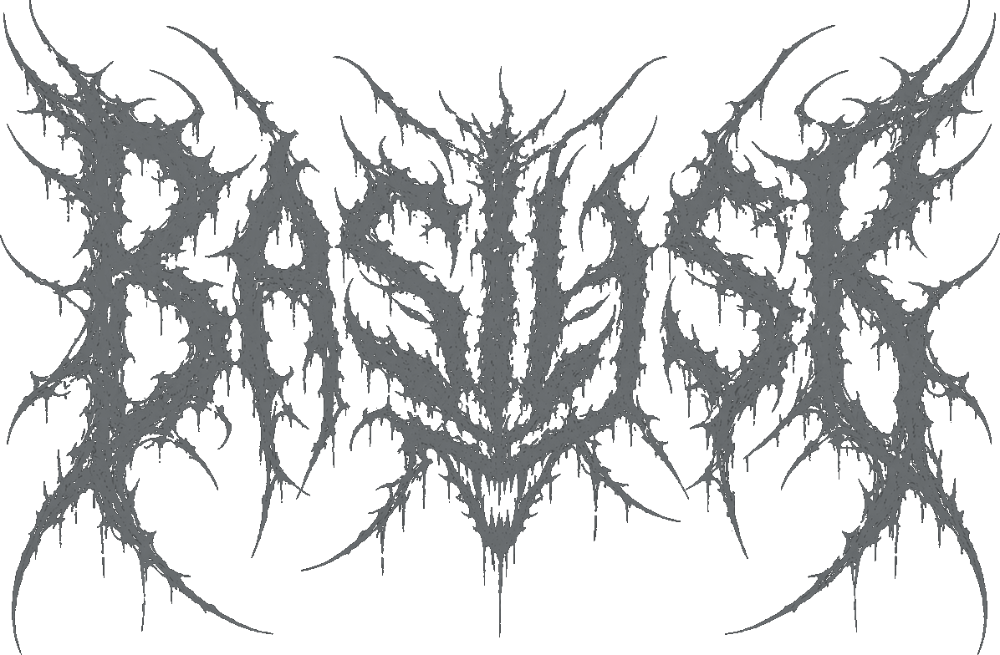

An assistant that does the work, then proves it worked.
Basilisk is a native Linux desktop AI assistant — it gives a language model you supply a real workspace, a shell, a memory, and a rule it cannot talk its way around: nothing is done until something you can read says so.
Hand it a repository, as a folder or a zip. It runs your tests before it changes a line, edits the tree, runs them again, and keeps going until they pass — refusing to hand back work it has not verified. It reads the live web in full instead of guessing from training data. It drives your shell and your desktop, sees images, and speaks. MIT — free to own, free to run.
And when you need the other thing: one tap of Unleash turns the same loop into an autonomous penetration-testing agent — 87 of 113 on OWASP Juice Shop, black-box, on one of the cheapest models on the market. Nothing offensive is loaded until you arm it.
Your machine. Your key. Your data. MIT-licensed, no account, nothing phoning home. It doesn't guess. It confirms.
Why a workspace beats a chat window. An assistant that ends at the reply asks you to take its word for it. Basilisk does not get to have an opinion about whether the job is done: on your code, the verdict is your own test suite, classified against a baseline taken before it touched anything — what it fixed, what it broke, what is still failing. Under Unleash the same rule applies to an exploit: a dumped row, another user's token, an out-of-band callback, checked for before anything is recorded. No proof, no finding. That one rule is the whole product.

Basilisk executes real shell commands and edits real files with your user's privileges. That is the point of it, and it is also the risk: read install.sh before you run it, and keep backups of anything you point it at. Your own repository is copied into a private workspace rather than edited in place, so the tree you hand it is never the tree it changes.
Armed mode is a separate promise. One tap of Unleash loads the offensive suite and runs with no per-step approval until the objective is met. Aimed at the wrong host it will keep working that host until you pull it off. Run it only against systems you own or have explicit written authorization to test — unauthorized testing is a crime in most jurisdictions.
The irreversible-command class — disk wipes, recursive root deletes, fork bombs, raw block-device writes — is hard-blocked in two independent places, below the model, with no "run anyway", in both modes. That floor protects your machine. Nothing in the tool protects you from pointing it at someone else's.
A GTK4 desktop app that gives a language model hands.
Most assistants stop at the reply. Basilisk is built around the step after it: open the thing, change the thing, run something that proves the change worked, and say plainly what is still broken.
By default it is a general and coding assistant. Hand it a repository as a folder or a zip and it works the whole tree — search, read, targeted edit, run your tests, iterate until they pass, diff, export. It reads the live web in full rather than answering current questions from stale training data. It drives your shell and your desktop, audits code across ten scanners, hardens a host, sees images, speaks and listens, and remembers across sessions.
A second mode does security work. One tap of Unleash and the offensive suite loads — until then it is refused at the loader, not hidden behind a flag. Armed, it runs an engagement end to end: recon, exploitation across every web-vulnerability class, verification, write-up, turn after turn until the objective is confirmed or you press Stop. Errors don't end the run; it reads them and keeps going.
Same loop both times: do the thing, then prove it worked.
It opens your repo and actually changes it.
Hand Basilisk a folder or a .zip and it works the whole tree: searches it, reads it, edits it, runs your tests, and keeps going until they pass. Your own tree is copied into a private workspace rather than edited in place, so the directory you point at is never the one it changes. No passing test, no fix — and it will not touch your tests to get one.
Baseline before it touches anything
It runs your tests first and records what was already red. Without that, every pre-existing failure looks like agent damage — and worse, an already-broken test gets quietly "fixed" and folded into a diff you never asked for and can't separate from your own work.
It tracks failing test names, not counts
A count can't tell "fixed one, broke another" apart from "nothing changed" — both read as two failed. So the verdict is computed from the failure set, and broke is the first thing it reports.
It won't export work it hasn't verified
Export is the one moment your real repository is at risk, and "the model said it was fine" is not evidence. Unverified edits, or a last run that reported a regression, and the export is refused. You can force it — but you have to ask, and the result is flagged.
It writes whole files, not fragments
A 400-line file is 6–8k tokens. A chat-sized output budget truncates that mid-string, inside the write call’s own JSON — which arrives as a mangled edit and reads like the model lost its mind. A turn that is doing work gets a file-sized budget and a time limit that scales with it. Whole-file writes are pinned byte-for-byte across eight tool-call dialects, and a read too big to fit says [INCOMPLETE] inside the content rather than quietly looking finished.
A question and a job are not the same turn
“What changed in nmap 7.99” wants research, one answer, stop. “Fix the auth bug in my repo” wants the change made — and “answer once then stop” fights every multi-file edit. The turn is classified first, and a job gets work mode: read before you write, run something that proves it, iterate until the tests actually pass. If a question needed a live source and no fetch happened all turn, the app runs the search itself rather than let “fetching that now” end a turn with nothing fetched.
Your archive is untrusted input
This is the one thing that takes a file from outside and writes it under a name the file chooses. Zip slip, symlink entries and zip bombs are refused before anything is written — and refusals are reported, not silently dropped, so you never think the import just lost data. A stray .env is flagged and kept out of the model's context.
And the rule it will not break: it does not touch your tests to make them pass. Editing a test to match broken code is the single worst thing an agent can do in a repository, so it is prohibited in the persona and the verdict is computed from your suite, not its opinion of its own work.
It remembers, it learns, and it writes its own tools.
Basilisk is not a stateless prompt. It carries persistent memory across sessions, sharpens itself inside an engagement, and can extend its own toolset when something is missing — all on your machine, all under your control.
Persistent memory across sessions
Facts, preferences, past fixes, and prior findings persist in a local SQLite store you own. Recall is relevance-scoped: each turn pulls only the handful of memories most relevant to the current task, so history can grow indefinitely without ever bloating the context window or the token bill. It's keyword-based by default — zero model compute, fast enough to run on a phone — and upgrades to embedding similarity when a model provides it. One settings toggle, one memory_forget tool, and nothing leaves the box.
Learns within the engagement
Every attempt and verdict lands in the exploitation oracle. Confirmed bugs are never re-run and dead ends aren't retried, so the longer Basilisk works a target the sharper its next move gets — it spends its turns on what isn't proven yet. When an approach stalls, it pulls the exact technique from a vetted source and applies it on the following move instead of flailing.
Writes and keeps its own tools
When the toolbox is missing something, Basilisk can write a new Python tool, test it, and keep it — but only if it passes. A proposed skill runs nothing until you click Apply; then it's parsed, run against its own test in the sandbox, and saved only if that test succeeds. A tool that can't prove it works is never kept. Every later call runs in the sandbox too, and unused skills are archived rather than deleted.
The claim is only worth the number you can regenerate.
Scored against OWASP Juice Shop, which marks a challenge solved only when the exploit actually fires. No partial credit. No checklist to recall. Graded one to six stars by difficulty — and it's the board the security community already argues over, which is exactly why it's the one worth posting.
Re-verified, not just re-labelled. The board was run again on v1.0.0.17 and came back 87 / 113 — the same challenges, challenge for challenge, not one lost to regression. The score has now held from v7.6.0 through the current line, on the same model (DeepSeek-V4-Flash, the model the board was measured on) against the same container with the same scoring. Every row below still names the build that produced it, because a benchmark you did not re-run is not a result you get to claim — and this one was re-run. It regenerates in one command below.
The curve is the honest part. It clears the entire lower half outright — every one- and two-star, and 24 of 26 three-star — then thins as the chains get deeper. That is the shape a real tool has; a suspiciously flat one usually means the model recognised the target rather than exploited it.
At the deep end it still takes 13 of 19 five-star and 7 of 12 six-star, including SSRF, SSTi, Forged Signed JWT and Arbitrary File Write. The misses cluster in one honest place: where a single builder isn't enough and the chain runs long — RCE/DoS variants, NoSQL manipulation, and the LLM-chatbot challenges. Those are the next target, and they're listed here rather than rounded away.
| Agent | Licence | Black-box | White-box (source given) |
|---|---|---|---|
| Priest's Basilisk v7.6.0 | MIT · free | — | |
| Priest's Basilisk v7.5.3 | MIT · free | — | |
| Priest's Basilisk v7.1.0 | MIT · free | — | |
| Priest's Basilisk v6.0.0 | MIT · free | — |
bar length = share of the 113-challenge board solved · every row names the build that produced it
Published work generally puts fully-autonomous LLM pentest agents around 20–30% on comparable tasks. Basilisk clears roughly 77% on the full board, black-box — well above that line, and on one of the cheapest models on the market at that.
87 / 113 is a black-box number: no application source on the machine, the way a real engagement actually starts. And a challenge only counts when the exploit fires — a dumped row, a forged token that validates, a measurable timing delta, an out-of-band callback. Nothing is scored on the model saying it worked.
Every number here was produced driving DeepSeek-V4-Flash — cheap and fast, not a frontier model. GLM-5.3-Flash is the other model this is tuned for, and it holds its own against models costing many times more.
That is the design claim, not a footnote: the score comes from the loop wrapped around the model — hypothesis → deterministic exploit builder → fire → prove it against ground truth → keep the receipt. If you need a frontier model to get a result, you have built a wrapper, not an agent.
Escape's Duck Store — a deliberately-vulnerable REST API.
A different shape of target from Juice Shop: the planted flaws are API-first — broken object- and function-level authorization, mass-assignment privilege escalation, server-side request forgery, and business-logic abuse. Basilisk found every one working purely from the live API surface, no schema handed to it.
Don't take the number. Regenerate it.
Stand up the same container, point Basilisk at the board, and call juiceshop_report — it reads the live scoreboard at /api/Challenges and reports solved and available by difficulty. Score any other tool against the same container and compare.
# spin up the graded target, then aim Basilisk at it
docker run -d -p 3000:3000 -e NODE_ENV=unsafe \
--name juiceshop bkimminich/juice-shop
A closed loop, not a payload spray.
One loop runs both jobs. On your code it reads the failure, makes the smallest change that should fix it, and re-runs your suite to find out whether it did — the verdict classified against the baseline it took before touching anything. Armed, the same shape reads a target's behaviour, reaches for the matching exploit builder, fires, and confirms the hit against ground truth before moving on. Every attempt and verdict is recorded, so the loop never re-covers ground it already settled.
In plain English: a scanner throws payloads at a page and reports what looked odd. Basilisk decides what would have to be true if the bug were real — a specific row appearing, a specific token leaking, a callback arriving at a server only it knows about — then goes and checks whether that actually happened. It is the difference between "this smells like SQL injection" and "here is a row out of your database."
![Basilisk architecture pipeline: (1) the model reads the target's behaviour, picks the vulnerability class, and directs the next move; (2) deterministic exploit builders generate the payload; (3) the execution layer fires it through a hard safety gate that blocks destructive commands; (4) a verified-exploitation oracle arms a proof marker, fires, then confirms or discards the result; (5) an evidence ledger stores a hashed receipt and never re-runs a solved bug. The verdict feeds back to the model so nothing counts until it is proven.](assets/brand/architecture.svg)
Read what is actually there
On code: search the tree, read the failing test and the callers. On a target: fingerprint the stack and watch how it responds — reflections, timing, error shapes.
Reach for the right tool
A surgical edit through the workspace, or the general-purpose exploit generator for that class, parameterised for this target — not a Juice-Shop-bound toy.
Decide what would prove it
The test that has to go green, or the marker that would prove the bug: a dumped row, a foreign token, a measurable difference, an OOB callback.
Fire
Send the payload through the same gate every command passes — with the destructive class hard-blocked underneath it.
Check ground truth
Re-run the suite, or look for the armed marker. A green-looking diff or a 200 is not a result; the test run and the marker are.
Record the verdict
Write confirmed / failed / pending into a ledger it consults every planning turn, hashing the command as it goes.
Exploit builders
Four subsystems bridge a CTF and a real host
Parses a JSON or XML body, injects at every node, and serialises back to valid syntax — so the payload actually reaches each field instead of breaking the parser.
Extracts every dynamic token from a response — cookies, CSRF, bearer/JWT, nonces — and threads it into the next request, reaching steps a stateless scanner never gets to.
Proves blind bugs by measuring: diffs TRUE vs FALSE responses for a boolean channel, and analyses latency statistically (mean, stddev, z-score) to confirm time-based blind past network jitter.
Arms, fires, and checks — recording confirmed / failed / pending in a ledger. For blind bugs that echo nothing back it stands up a local out-of-band canary listener: the payload carries a unique callback URL, and a hit proves the bug with certainty. Runs locally and offline.
Remove the doors rather than bolt on a filter.
An agent that reads the outside world and runs shell commands is a prompt-injection target by construction. So the design assumption is that the model is already compromised — and the things that matter are put where a compromised model cannot reach them. Not filtered. Removed.
Injection surface removed, then gated
Tools that fetched attacker-chosen URLs are gone. What's left reads only from a fixed allow-list, split in code: trusted advisories (NVD, MITRE, CISA) fetch automatically; user-authored sources (GitHub, exploit-db) are held outside the loop behind a one-tap approval. Off-list URLs, redirects, and cloud-metadata addresses are refused.
The irreversible class can't run — twice
A structural detector hard-blocks disk wipes, recursive root/$HOME deletes, fork bombs, and raw block-device writes. It judges the command that will actually run, not the word that comes first — peeling wrappers and their own options (timeout 5 …, nice -n 5 …, sudo -u root …), reading through ( … ), { …; } and if/then, and entering sh -c, eval, trap, xargs and command substitutions. Refused at the UI gate and inside the execution primitive. There is no "Run anyway."
Untrusted input is quarantined
Anything from outside — a target's response, an MCP result, an analysed image — passes a deterministic content firewall and is wrapped as data, never instructions before the model ever sees it.
Your sudo password never touches the model
When a command needs root, Basilisk asks you. The password reaches sudo through an askpass helper — never into the prompt, never onto disk, never into a log, and never into the process argument list where any user on the box could read it with ps.
It cannot edit its own safety code
A command that would write to, truncate, redirect into, sed -i or copy over the safety and scope modules is refused — including when the write hides inside sh -c, an interpreter one-liner, or a cp destination. The immutable guardrail block is hash-verified byte-for-byte every release.
Self-written tools run jailed, and only if they pass
When the toolbox falls short, Basilisk writes a new Python tool and a test for it. The code is AST-parsed, statically screened, and run against that test inside a bubblewrap sandbox — and kept only if it passes. A tool that can't prove it works is discarded, not saved with a warning. Every later call runs jailed too.
Scope is a boundary, not a suggestion
Before any active command runs, its targets are extracted and checked against the list you authorised. It fails closed: no scope set, an unparseable command, or no match all mean refused. It reads through sh -c, wrapper prefixes and command substitution — the same shapes the destructive floor handles.
Your provider stays where you put it
Basilisk never quietly hops to a different cloud. The provider you pick is pinned, and a retry after a degraded reply goes back to the same one — so your engagement data never lands somewhere you didn't choose. It won't build standalone weaponised malware either: no reverse shells, implants, ransomware or backdoors. That line lives in the immutable guardrail, not a swappable prompt.
In plain English: the model is treated like a talented contractor with a key to one room. It can do anything inside that room, including things that would wreck the room. It cannot get out of it, cannot change the locks, cannot read your wallet on the way past, and cannot take the tools home.
Claims are cheap. Run the suite.
Every claim on this page is either a number you can regenerate or a test you can run. The suite is stdlib-only — no pytest, no network, no fixtures, no account, nothing to install — and it finishes in under a minute on a laptop. You do not have to believe any of this. You can check it.
for f in tests/test_*.py; do python3 "$f" || echo "RED $f"; done
Bugs are pinned, not described
When a real bug is fixed, the test that catches it is written to fail against the previous release. A regression cannot quietly return — it has to walk back past a test that was built from the bug itself.
Performance is asserted as a shape
A millisecond ceiling passes by luck on a fast machine. So the suite also asserts the scaling exponent — quadruple the input, the time must not quadruple. That fails identically on a fast box and a slow one.
Counter-properties, tested as hard
Every safety check is paired with a corpus of ordinary work it must stay silent on. Over-blocking fails the suite too — a safety feature people switch off protects nothing at all.
The shipped artifact is what's verified
The release archive is extracted fresh and the full suite run from inside it — not from the working tree it was built in. The guardrail block is hash-checked every release; the safety, scope and ledger modules are diffed byte-for-byte.
We fuzz our own safety floor, and publish what it finds.
The hard block on irreversible commands is the one piece of Basilisk that has to be right, because under Unleash nobody is on the trigger. So we attack it on purpose, every release, and publish whatever it gives up.
v1.1.4.0 · the floor, and the reporting around it
The floor gets fuzzed every release, and every candidate bypass is re-run in real bash before it counts — the newest harness shims the binary itself, so a “bypass” means the shell really invoked rm with the destructive argument, not that a regex looked wrong. v9.7.0 closed twenty-one shapes, among them timeout 5 rm -rf / and ( rm -rf ~ ). v1.0.0.22 closed sixteen more in two classes nothing had covered: a raw block device was not a “critical file”, so truncate -s 0 /dev/sda was refused by nothing; and a target hidden behind a variable — X=/; rm -rf "$X" — never puts the literal next to the verb.
v1.1.4.0 turned the same method on the reporting and found a worse class of bug than a missed refusal: a provider replying max_tokens is too large for this model was matched against the credential-error word list, which contained the bare word “token”, and came back to the operator as “authentication failed — check your API key”. A gate that refuses the right thing for the wrong stated reason sends you to fix something that was never broken, so the auth phrases now have to name a credential and the budget check runs first.
The method mattered more than the fixes
A blind fuzz reported 18,856 “bypasses” — nearly all of them shell syntax errors that never execute and never mattered. Filtering down to what a real shell genuinely runs is what made the real ones findable at all. The counter-property is checked as hard as the property: not one of these refusals blocks ordinary work, because a floor that refuses rm -rf ./build gets switched off — and then it protects nothing. All of it is pinned by suites that fail against the previous release.
Said plainly: those bypasses were real, not theoretical. timeout 5 rm -rf / is not an attack — it is something a model writes by accident. The honest claim is not that Basilisk has never had a hole; it is that the holes get hunted, published, and pinned. If you find a twenty-second shape, open an issue. That is the arrangement.
You supply the brain. Keys stay on your disk.
Bring one key for whichever provider you want, set in Settings → Backends. It lives in ~/.config/basilisk/settings.json, locked to your user, and goes nowhere except that provider's own API. There is no Basilisk account to make, because there is no Basilisk server to make it on.
Large open models — DeepSeek, Qwen, Kimi — plus SenseVoice speech-to-text.
Get a key →A native package, or a script you can read.
Native packages are the short path — they resolve the GTK stack through your own package manager, and they install the desktop entry and icon with it.
sudo apt install ./priestsbasilisk_1.2.0.9-1_all.deb
sudo pacman -U priestsbasilisk-1.2.0.9-1-any.pkg.tar.zst
An auditable PKGBUILD ships in packaging/ and runs the entire test suite as its check() step, so makepkg -si will not produce a package from an engine that fails its own suite. On Arch the modules install to /usr/share/priestsbasilisk rather than site-packages on purpose: Arch is rolling, and a path pinned to python3.13/site-packages stops being importable the day python moves to 3.14.
Read the installer. Then run it.
Basilisk runs shell commands as you. So it also ships as plain Python and one shell script you can read start to finish before you run it — which you should, and which is the point of it being one file. The installer detects your distro, parse-checks every file before it touches disk, and backs up your chat history. The same command updates in place.
curl -fsSL https://raw.githubusercontent.com/the-priest/PriestsBasilisk/main/install.sh | bash
git clone https://github.com/the-priest/PriestsBasilisk.git basilisk
cd basilisk
less install.sh # read it first
./install.sh
- Python 3.10+, Linux with GTK4 / libadwaita (X11 or Wayland).
- Built and tested on Kali and CachyOS; package manager, escalation tool and wordlist paths are auto-detected on any Arch/Debian/Fedora base.
- Standard tooling (nmap, sqlmap, …) is auto-detected; missing tools are flagged with an install hint, never assumed.
- From source, install the GTK stack from your distro first — PyGObject ships source-only and compiles against your headers. The README lists the exact command per distro.
What it is not, and what it can't do.
Every tool page lists strengths. Here are the limits, because you will find them anyway and it is better you hear them from us.
It is not a replacement for a pentester
It is an extremely fast, tireless pair of hands that never skips the boring half of the methodology. Scoping the engagement, judging business impact, deciding what a finding is worth, and writing the part of the report a client acts on — still yours.
It gets weaker as the chain gets longer
Look at the difficulty curve above: near-total at one to three stars, thinning in the deep end. Bugs needing four unrelated insights stacked in the right order are still where autonomous agents lose. The misses are published by name rather than rounded away.
It is only as good as the model you give it
The scaffolding is what scores — that is the whole thesis — but a weak model still reasons weakly inside it. The benchmarks were run on a cheap model on purpose. They were not run on every model.
The benchmark numbers are ours
They are reproducible — exact target, flags, model and scoreboard commands are published so you can re-run them — but they are self-reported. Treat them the way you would treat any vendor's self-reported number until you have regenerated one yourself.
Linux and GTK4 only
No Windows, no macOS. It is built and tested on Kali and CachyOS, and it does not run on your work laptop's default OS.
The model call still leaves your machine
Everything else is local — your findings, ledger and history sit in SQLite on your disk. But the API call to your chosen provider goes out. If your engagement data cannot touch a third-party API, this is the wrong tool until you point it at something self-hosted.
And the one that matters most: the floors are real, tested, and they stop Basilisk destroying your machine. Nothing in the software stops you aiming it at a host you have no right to touch — and it will keep working that host until you pull it off. That part was never a software problem.
Straight answers.
Common questions about Basilisk as an AI penetration-testing agent — how it compares, what it runs on, and whether it's safe.